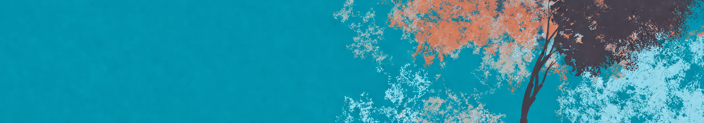

<!-- Full-width banner — appears on every page, directly below navbar -->
<div class="site-banner">
  
</div>

<!-- Left column — same on every page -->
<aside class="profile-sidebar">
  <div class="profile-photo-wrapper">
    
  </div>
  <h2 class="profile-name">Dr. Jeshua Tromp</h2>
  <p class="profile-title-label">Postdoctoral Researcher</p>
  <p class="profile-affiliation">
    Donders Institute for Brain, Cognition and Behaviour<br>
    Radboudumc, Nijmegen
  </p>
  <hr class="profile-divider">
  <div class="social-icons">
    <a href="https://scholar.google.com/citations?user=vJ3tg9UAAAAJ&hl=nl&oi=ao" target="_blank" title="Google Scholar"><i class="ai ai-google-scholar"></i></a>
    <a href="https://www.researchgate.net/scientific-contributions/Jeshua-Tromp-2222288309" target="_blank" title="ResearchGate"><i class="ai ai-researchgate"></i></a>
    <a href="https://orcid.org/0000-0001-9782-6076" target="_blank" title="ORCID"><i class="ai ai-orcid"></i></a>
    <a href="https://www.linkedin.com/in/jeshua-tromp-769552157/" target="_blank" title="LinkedIn"><i class="fab fa-linkedin-in"></i></a>
    <a href="https://hersenvoer.substack.com" target="_blank" title="Substack"><i class="fab fa-substack"></i></a>
    <a href="contact.html" title="Email"><i class="fas fa-envelope"></i></a>
  </div>
</aside>
